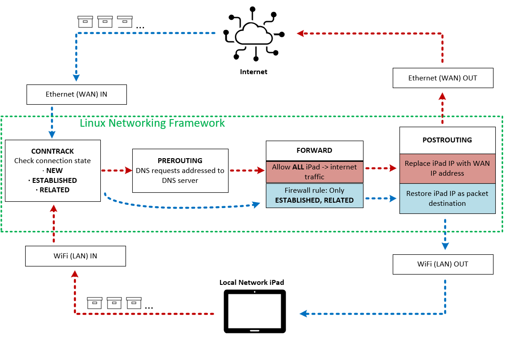

Overview
I designed and implemented a Linux Internet Connection Sharing service supporting runtime connectivity for a medical imaging platform at a generic capability level.
Supplementary to this, I also created a diagnostic service creating log outputs capturing ICS runtime behavior, network interface state, ICS systemd service status, IP addressing, routing, system IPv4 forwarding configuration, and network firewall configuration.
Problem / Objective
Engineers could not remotely observe an isolated R&D medical-imaging platform during software trials. Debugging depended on physical observation, external recordings, or post-trial reporting.
My goal was to create a controlled, repeatable network gateway that enabled live platform streaming to engineering workstations without disrupting the isolated device network.
System Architecture

Technical Implementation
This stands out for its automated Ethernet discovery, interface addressing, IP forwarding, DNS, NAT, and firewall configuration. Built a second service for diagnostics; capturing initial runtime info, system state, network interface configuration, internet routes, and firewall rules.
Results
The resulting system enabled live remote platform observation, replaced fragile network configuration with a repeatable automated workflow, and provided detailed network-state diagnostics when failures occurred.